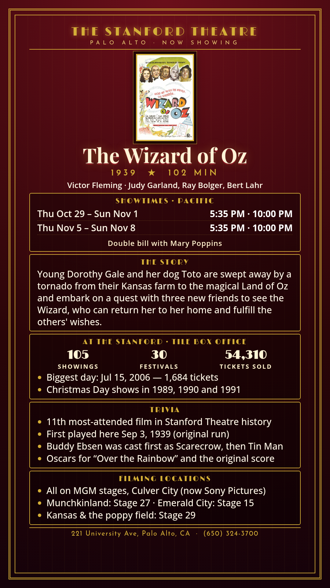

The Wizard of Oz
Victor Fleming · Judy Garland, Ray Bolger, Bert Lahr
Young Dorothy Gale and her dog Toto are swept away by a tornado from their Kansas farm to the magical Land of Oz and embark on a quest with three new friends to see the Wizard, who can return her to her home and fulfill the others' wishes.
Schedule
Mary Poppins / The Wizard of Oz · Oct 29–Nov 8, 2026
October 29–November 1
- Mary Poppins (1964): 7:30 (plus 3:05 Sat/Sun)
- The Wizard of Oz (1939): 5:35, 10:00
November 5–8
- Mary Poppins (1964): 7:30 (plus 3:05 Sat/Sun)
- The Wizard of Oz (1939): 5:35, 10:00
Trivia
- 11th most-attended film in Stanford Theatre history
- First played here Sep 3, 1939 (original run)
- Buddy Ebsen was cast first as Scarecrow, then Tin Man
- Oscars for “Over the Rainbow” and the original score
Filming Locations
- All on MGM stages, Culver City (now Sony Pictures)
- Munchkinland: Stage 27 · Emerald City: Stage 15
- Kansas & the poppy field: Stage 29
Previous Showings
105 Showings • 30 Festivals
54,310 tickets sold
Past runs (since '03):
- 7/2003 4,612 tickets
w/ The 5000 Fingers of Dr. T - 1/2004 745 tickets
w/ Rocketship X-M - 7/2006 4,959 tickets
w/ The Adventures of Robin Hood - 12/2008 2,933 tickets
w/ The Shop Around the Corner - 12/2009 858 tickets
w/ Meet Me in St. Louis - 12/2010 2,099 tickets
w/ The Shop Around the Corner - 12/2011 1,895 tickets
w/ The Shop Around the Corner - 6/2014 4,123 tickets
w/ Singin' in the Rain - 12/2015 1,497 tickets
w/ The Shop Around the Corner - 12/2016 1,681 tickets
w/ The Shop Around the Corner - 12/2017 1,343 tickets
w/ The Shop Around the Corner - 12/2019 1,509 tickets
w/ The Shop Around the Corner - 8/2022 1,382 tickets
w/ Meet Me in St. Louis - 12/2023 2,250 tickets
w/ The Shop Around the Corner - 11/2024 3,404 tickets
More

